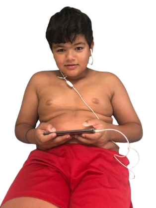
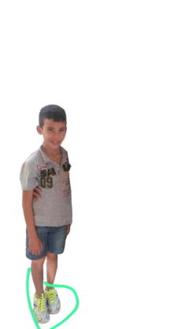

POSSI
A big, muscular guy, shaped like a family man and unlike Kauê, he has a light focus on Valorant. Responsible for the API part of Nutritrack.
Cara grande, musculoso, shape de um pai de família e ao contrario do Kauê tem uma leve mira no Valorant. Responsável pela parte de API do Nutritrack.
Cara grande, musculoso, shape de um pai de família e ao contrario do Kauê tem uma leve mira no Valorant. Responsável pela parte de API do Nutritrack.


GIOVANNA
Our athlete, who is currently all screwed up, just like the poor thing's codes (just kidding, just a little), responsible for the Nutritrack Prototype.
A nossa atleta, q no momento tá toda ferrada, igual os códigos da coitada ( mentira, só um pouco), responsável pelo Protótipo do Nutritrack.
A nossa atleta, q no momento tá toda ferrada, igual os códigos da coitada ( mentira, só um pouco), responsável pelo Protótipo do Nutritrack.

JAPA
He knows a lot about programming, even though he never opens his eyes. He pays attention to everyone, but he is a very smart and cool guy. Responsible for the FrontEnd of Nutrack.
Manja muito quando o assunto é programar, mesmo nunca abrindo o olho. Ele atenta todo mundo, mas é um mlk mto inteligente e daora. Responsável pelo FrontEnd do Nutrack.
Manja muito quando o assunto é programar, mesmo nunca abrindo o olho. Ele atenta todo mundo, mas é um mlk mto inteligente e daora. Responsável pelo FrontEnd do Nutrack.
PALHAÇÃO
A gangster's face, but a heart of gold. One of the nicest guys in the room who needs no introduction. Responsible for the FrontEnd of Nutritrack.
Cara de bandido, mas coração de ouro. Um dos mlks mais gente boa da sala que dispensa apresentações. Responsável pelo FrontEnd do Nutritrack.
Cara de bandido, mas coração de ouro. Um dos mlks mais gente boa da sala que dispensa apresentações. Responsável pelo FrontEnd do Nutritrack.
KAUÊ
A misunderstood genius, a bit crazy but very knowledgeable about codes and plays a slightly questionable Valorant game, he was responsible for the API part of Nutritrack.
Um gênio incompreendido, meio maluco mas manja muito dos códigos e joga um valorant levemente duvidoso ficou responsável pela parte de API do Nutritrack.
Um gênio incompreendido, meio maluco mas manja muito dos códigos e joga um valorant levemente duvidoso ficou responsável pela parte de API do Nutritrack.
ANA LUIZA
A alimentação saudável é essencial para o bom funcionamento do corpo e da mente. Ao escolher alimentos nutritivos, como frutas, verduras, proteínas magras e grãos integrais, ajudamos a prevenir doenças como diabetes e obesidade, além de fortalecer o sistema imunológico e melhorar a digestão. Uma dieta balanceada também
RAISSA
Good at sports and work, always delivers (Horrors) very frequently, responsible for the Nutritrack prototype.
Boa nos esportes, e nos trabalhos, sempre entrega (Horrores) com mta frequência, responsável pelo protótipo do Nutritrack
Boa nos esportes, e nos trabalhos, sempre entrega (Horrores) com mta frequência, responsável pelo protótipo do Nutritrack

ANEMIA
The guy knows (not very much). Weird? (maybe), possibly a side effect of his slight anemia. But when it comes to codes, he dominates. Responsible for the FrontEnd of Nutritrack.
O cara manja (nem muito). Esquisito? (talvez), possivelmente efeito colateral da sua leve anemia. Mas quando o assunto é código, ele domina. Responsável pelo FrontEnd do Nutritrack.
O cara manja (nem muito). Esquisito? (talvez), possivelmente efeito colateral da sua leve anemia. Mas quando o assunto é código, ele domina. Responsável pelo FrontEnd do Nutritrack.